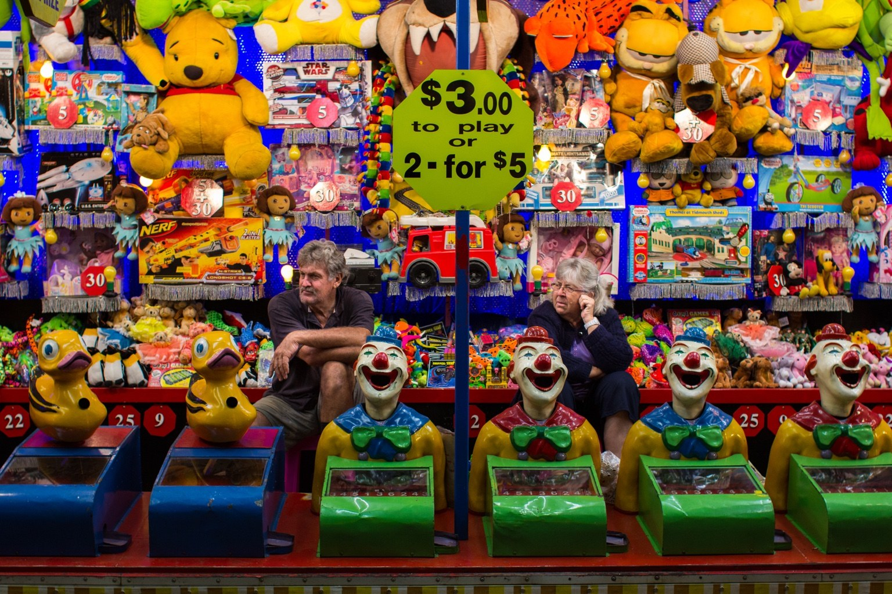

A personal collection of photographs
Moments,
observed.
Street scenes, distant places, quiet landscapes and the people in between. A selection of photographs by Matthew Elliott.

Featured collection · Carnies01 / Portfolio
Selected work
Explore the collections
Behind the lens
About the photographer

Matthew Elliott Photography
Finding beauty
in the everyday.
Photography is a way of paying attention — to fleeting light, unexpected details, and moments that might otherwise pass unnoticed.
This is a temporary introduction. Replace it with Matthew's own story, creative approach and favourite subjects.
Get in touchSay hello.
For enquiries, collaborations or simply to talk photography, get in touch.
hello@chaosboi.com ↗Placeholder email — change this to your actual address before publishing.